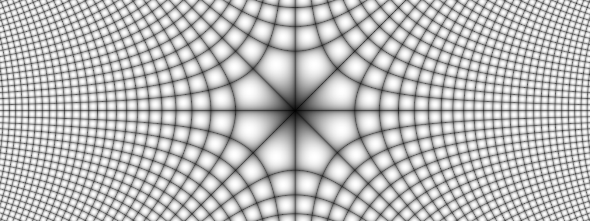

Sea $S$ un conjunto de números complejos. Una función $f$ definida en $S$ es una regla que asigna a cada $z$ en $S$ un número complejo $w$. El número $w$ es llamado el valor de $f$ en $z$ y se denota por $f(z)$; esto es, $w = f (z)$. El conjunto $S$ se llama el domino de definición de $f$.
Si solo un valor de $w$ corresponde a cada valor de $z$, decimos que $w$ es una función valor-único de $z$ o que $f(z)$ tiene un único valor. Si más de un valor de $w$ corresponde a cada valor de $z$, decimos que $w$ es una función multivaluada de $z$.
Una función multivaluada se puede considerar como una colección de funciones de valor-único, donde cada miembro es conocido como una rama de la función. En general, consideramos un elemento particular como una rama principal branch de la función multivaluada y el valor de la función correspondiente a esta rama como el valor principal.
Ejemplo 1: La expresión $w=z^2$ representa una función de valor-único. Por otra parte, si $w=z^{\frac{1}{2}},$ entonces para cada valor de $z$ existen dos valores de $w$. Por lo tanto, la función $$w=z^{\frac{1}{2}}$$ es multivaluada (en este caso con dos valores) de $z$.
Supongamos que $w=u+iv$ es el valor de una función $f$ en $z= x+iy$, de tal forma que $$u+iv=f(x+iy)$$ Cada uno de los números reales $u$ y $v$ dependen de las variables reales $x$, $y$. En consecuencia $f(z)$ se puede expresar en términos de un de funciones con valores reales $x$, $y$ \begin{eqnarray}\label{eq1} f(z)= u(x,y)+iv(x,y). \end{eqnarray} Si consideramos las coordenadas polares $r$ y $\theta$, en lugar de $x$, $y$. Entonces $$u+iv=f\left(re^{i\theta}\right)$$ donde $w=u+iv$ y $z=re^{i\theta}$. En este caso escribrimos \begin{eqnarray}\label{eq2} f(z)=u\left(r, \theta\right)+iv\left(r, \theta\right). \end{eqnarray}
Ejemplo 2: Si $f(z)= z^2$ entonces $$f(x+iy)=(x+iy)^2=x^2-y^2+i(2xy).$$ Por lo tanto $$u(x,y)= x^2-y^2\quad \text{y}\quad v(x,y)= 2xy.$$ Cuando usamos coordenadas polares tenemos que $$u\left(r, \theta\right)= r^2\cos 2\theta \quad \text{y}\quad v\left(r, \theta\right)= r^2\,\text{sen } 2\theta.$$
Pregunta: ¿Qué sucede cuando en las ecuaciones definidas en (\ref{eq1}) y (\ref{eq2}) la función $v$ es zero?
Para constantes complejas $a_n, a_{n-1}, \ldots, a_0$ definimos $$p(z) = a_n z^n + a_{n-1} z^{n-1} +\cdots +a_{1}z + a_0$$ donde $a_n\neq 0$ y $n$ es un entero positivo conocido como el grado del polinomio $p(z)$.
Funciones racionales: Razones $$\frac{p(z)}{q(z)}$$ donde $p(z)$ y $q(z)$ son polinomios y $q(z)\neq 0$.
Función exponencial: Si $z=x+iy$, la función exponencial $e^z$ se define como \begin{eqnarray*} e^z=e^xe^{iy}. \end{eqnarray*} Esto es porque \begin{eqnarray*} e^{iy}=\cos y +i\,\text{sen } y, \end{eqnarray*} entonces tenemos que \begin{eqnarray*} e^z=e^x\left(\cos y +i\,\text{sen } y\right). \end{eqnarray*}
En forma similar, el logaritmo complejo es una extensión compleja del logaritmo natural con valores reales (i.e., con base $e$). En términos de coordenadas polares $z = r e^{i\theta}$, el logaritmo complejo tiene la forma $$\log z = \log\left(r e^{i\theta}\right) = \log r + \log e^{i\theta}= \log r + i \theta.$$ Exploraremos en detalle esta función en la siguiente sección.
El seno y coseno de variable compleja se definen como: \begin{eqnarray*} \,\text{sen } z=\frac{e^{i z}-e^{-iz}}{2i}\quad \text{y}\quad \cos z=\frac{e^{iz} +e^{-i z}}{2}. \end{eqnarray*} Las otras cuatro funciones trigonométricas se definen a partir del seno y coseno complejos con base en las siguientes relaciones: with the following relations: \begin{align*} \tan z&=\frac{\,\text{sen } z}{\cos z} & \cot z&=\frac{\cos z}{\,\text{sen } z} \\ \sec z&=\frac{1}{\cos z} & \csc z&=\frac{1}{\,\text{sen } z}. \end{align*}
El seno y coseno hiperbólico de variable compleja se definen de forma similar a su versión de variable real; es decir, \begin{eqnarray*} \,\text{senh } z=\frac{e^{z}-e^{-z}}{2}\quad \text{y}\quad \cosh z=\frac{e^{z} +e^{- z}}{2}. \end{eqnarray*} Las otras cuatro funciones hiperbólicas se definen en términos del seno y coseno hiperbólico complejo con las siguientes relaciones: \begin{align*} \tanh z&=\frac{\,\text{senh } z}{\cosh z} & \coth z&=\frac{\cosh z}{\,\text{senh } z} \\ \text{sech } z&=\frac{1}{\cosh z} & \text{csch } z&=\frac{1}{\,\text{senh } z}. \end{align*}
Usa el siguiente applet para explorar las componentes real e imaginaria de algunas funciones complejas.
NEXT: La Esfera de Riemann